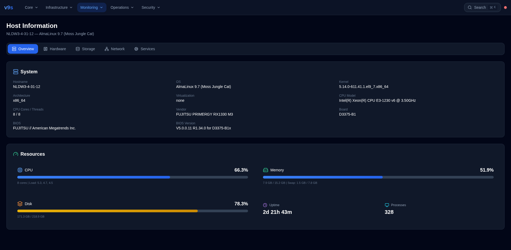
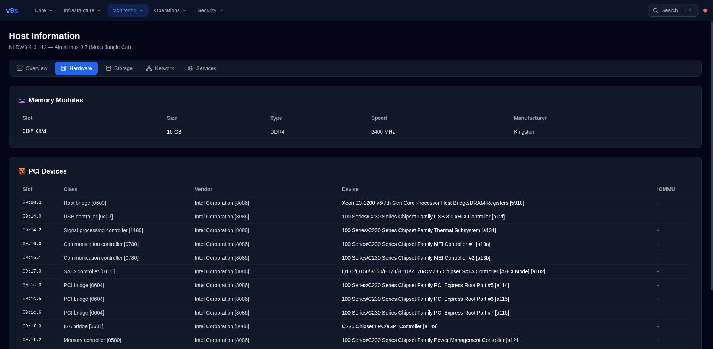
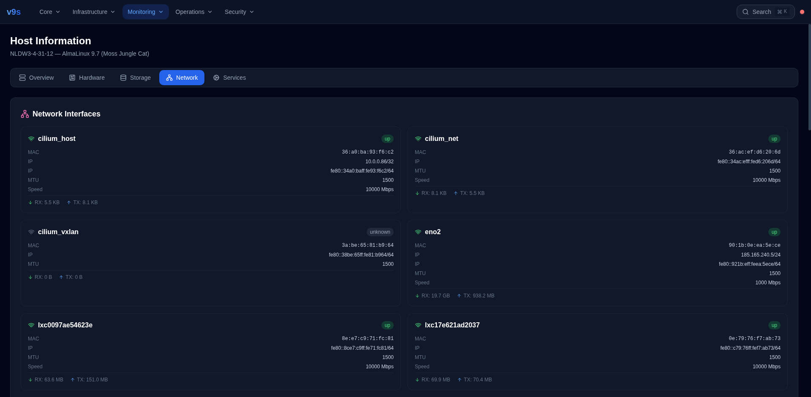
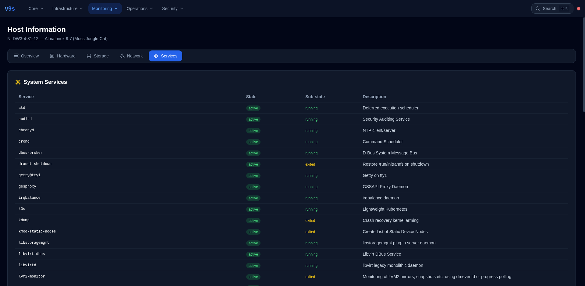

Host Infrastructure
Complete System Visibility from the Browser
Hardware inventory, disk partitions, network interfaces, systemd services, and real-time resource monitoring — all in v9s.
No SSH Required — Browser-Based Infrastructure Monitoring
System Overview
Real-time host metrics and system identification.

🖥️
System Identity
Hostname, OS, kernel version, architecture, CPU model, vendor, board, BIOS version.
📊
Resource Gauges
CPU usage + load average, memory + swap, disk usage. Color-coded bars: blue → yellow → red.
⏱️
Uptime & Processes
System uptime (2d 21h), total process count (328). Auto-refresh every 10 seconds.
Hardware Inventory
RAM modules and PCI devices from dmidecode and lspci.

What You See
| Component | Data | Example |
|---|
| RAM Module | Locator, Size, Speed, Type, Manufacturer | DIMM CHA1, 16 GB, 2400 MHz, DDR4, Kingston |
| PCI Device | Slot, Class, Vendor, Device | 00:00.0, Host Bridge, Intel, Xeon E3-1200 |
| CPU | Model, Cores, Threads | Intel Xeon E3-1230 v6 @ 3.50GHz, 8/8 |
Scrollable PCI table with hover highlight. 15+ devices detected on this server. Useful for verifying IOMMU groups, NIC models, and GPU passthrough compatibility.
Disk Partitions
All mounted filesystems with usage visualization.

Partition Data
| Mount | Device | Type | Size | Used | Usage |
|---|
| / | /dev/sda4 | ext4 | 219 GB | 171 GB | 78% |
| /boot | /dev/sda2 | xfs | 1 GB | 336 MB | 34% |
| /boot/efi | /dev/sda1 | vfat | 600 MB | 7.8 MB | 2% |
Color-coded usage bars: blue (<70%), yellow (<90%), red (>90%). Excludes tmpfs, devtmpfs, overlay, squashfs for clean view.
Network Interfaces
All host network interfaces with traffic counters.

Per-Interface Data
- State: Up/Down badge with green/gray color
- MAC Address: Hardware address (font-mono)
- IP Addresses: All assigned IPv4/IPv6
- Traffic: RX bytes (received), TX bytes (transmitted)
- Speed: Link speed in Mbps (if available)
- MTU: Maximum transmission unit
Card layout with two columns. Useful for verifying bridge interfaces, VLAN trunks, bond status, and KubeVirt network attachments.
System Services
All systemd services with status and description.

Service Status Badges
●
Running
Green badge. Active services: k3s, libvirtd, nginx, v9s-web, sshd, chronyd.
●
Exited
Gray badge. One-shot services that completed: kdump, lvm2-monitor, systemd-tmpfiles.
●
Failed
Red badge. Services requiring attention. Click to investigate with journalctl.
55+ services tracked. Scrollable table with sticky header. Total count and running count in section header.
Use Cases
When host visibility saves the day.
🔴
Disk Full Alert
Partitions tab shows /root at 95% (red bar). Quick identification without SSH. Know exactly which partition needs cleanup.
🧊
Memory Pressure
Overview tab shows 92% memory with heavy swap. Decision: add RAM modules or reduce VM count. Hardware tab confirms available DIMM slots.
🔌
Network Troubleshooting
VM can't reach external network. Network tab shows bridge interface is down. Quick diagnosis without SSH access to the host.
🛑
Service Failure
KubeVirt VMs not starting. Services tab shows virt-handler failed (red). Identified root cause in 10 seconds.
Infrastructure visibility without SSH
Hardware inventory, partitions, network, services — all from the browser.
No terminal access needed. No scripts to run. Just open v9s.